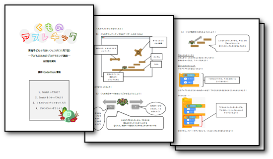

昨年度開催はオンラインでしたが、今回はNPO法人青梅こども未来の会場「コミュニティテラスみらい館プラス」で、未経験者/初心者歓迎の親子で遊べるプログラミング・ワークショップを開催しました。120分だけのプログラミング体験会になります。
ニンジャ８名（5家族。初めて参加7名）と大学から社会人までメンター5名が参加してくれました。今回のニンジャはなんと、小学1～2年生3名と未就学2名がパソコンのプログラミングに挑戦するという時代。
私たちの身近でプログラミングされた電気設備のひとつに信号機があります。信号機の動作を思い出してコードに置き換えてみる。歩行者用の信号機は、青の次は何だっけ？
そしてScratchでプログラムを作るとこうなる
メンターのなつみさんが執筆してくれた冊子で初めてのScratchプログラミングを遊びました。未経験者にもやさしく「猫にげ」ならぬ「くもにげ」調の命令ブロックひとつづつ体験していく流れです。

小学1～2年生と未就学のニンジャも60分のワークショップを楽しみました。 初めてマウスを操作する子はお母さん、お父さんが付きっきりでサポートしてくれたので、プログラミングのレクチャーがスムーズでした。 子どもたちはNPOさんの楽しい会場のおもちゃなどに気が散ることなく終始、パソコンの画面をキラキラした目で見ていたような印象です。 猫をステージいっぱいに大きくしたり、反対に点（・）くらいに小さくしたりして、楽しそうに遊んでくれました。 未就学の子は、スプライト（キャラクタ）に動きをつけてアニメーションができるとみんなに「見て見て！」と嬉しそうに言っていました。 小学生は、基本の命令ブロックを一つずつ試すところで、プログラムガイドにあることを試すのではなく、自分で興味を持ったブロックを組み合わせて遊んでいました。途中でスプライトを選び直したのですが、一度消したスプライトのコードと同じコードを自分でプログラムを思い出しながら作っていました。 体験会の終わりに参加した子どもたちから「今日は楽しかった」と言ってもらえたことが嬉しかったです。